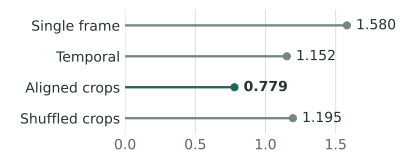
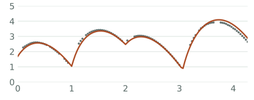
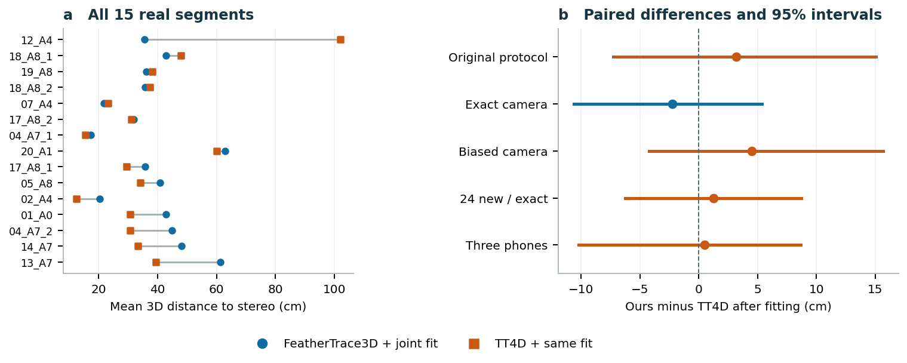

Image observations
Inputs are TrackNetV3 detections, 13 court landmarks, 24 × 24 grayscale crops, and detector heatmaps.
Monocular Trajectory Reconstruction with Local Appearance, Rally-Level Modeling, and Physical Refinement

Follow a rally from image observations to a 3D path and a joint fit of flight and racket contacts.
Inputs are TrackNetV3 detections, 13 court landmarks, 24 × 24 grayscale crops, and detector heatmaps.
The network links windows of up to 192 frames across the rally. Five shared updates reconcile projections with detections before viewing-ray stabilization.
The predicted path initializes and anchors a joint fit of flight states, shared drag, and contact times to the original detections and flight dynamics.
Image observations feed a 3D prediction, then a joint fit of flight and contacts.
Local image crops preserve cues lost when a detection is reduced to a point. Short-window and whole-rally attention predict a 3D position at every frame, including missed detections and racket contacts. Shared reprojection updates bring the prediction back to the image. This initialization let the physical fit converge on all 56 rendered rallies.
See the input ablationsNeural prediction · mean 3D error (m)

48 held-out simulated rallies, three training seeds per model. Both crop variants use temporal coordinates. Shuffling was applied during training.
A single objective fits flight states, quadratic drag and an editable set of contacts to the original image detections. The neural path initializes the fit and remains a soft constraint across gaps. On 56 rendered rallies the mean error was 0.50 m, compared with 1.27 m for the network alone and 1.24 m for a geometric initialization.
Inspect the contact editsHeight above court (m)

On the 103 stereo-paired frames, mean 3D distance fell from 1.23 m to 0.63 m.
With known gravity, a calibrated camera and lateral motion, a whole flight cannot be rescaled along the viewing rays while preserving its dynamics. We derive single-flight depth precision in closed form and a local bound for each rally. Across 28 model-matched rallies, the median ratio of reconstruction RMS error to its bound was 1.37.
Read the derivationAt a fixed frame rate, doubling the visible flight time reduces the idealized depth uncertainty by a factor of about 5.7.
One hand-held phone provides the reconstruction input. Two fixed phones triangulate an independent reference. Across 15 segments recorded at one venue, refinement reduced the mean 3D error in every segment and brought the pooled error to 0.398 m.
Compare all 15 segmentsMean 3D distance to the stereo reference
Select a recording to replay it. Across the full benchmark, the two fixed phones supplied a stereo reference for 1,600 of 2,415 frames.
Physical fitting reduced the mean distance to an independent stereo reference across 1,600 paired frames from 15 clips.
The real clips came from one venue. Across 56 simulated rallies, the full method averaged 0.498 m in 3D error.
Pretraining ran 690,625 updates, including rendering, waits, saves, and validation in wall time. Adaptation and fine-tuning ran 300,000 and 50,000 updates. Comparison rounds took 11.32 and 9.40 hours, including setup, multiple configurations, and validation.
The paper separately times prediction through fitting on 56 rendered rallies at 1.7 s/rally on one CPU core, excluding detection and calibration. Fitting keeps network weights frozen.
Local shuttle appearance and rally motion help fill short gaps.
Spot size and streaks add cues beyond coordinates. A three-layer encoder uses the 24 × 24 grayscale crop and heatmap. Crop center and scale preserve frame alignment, and missing detections are masked.
Two attention layers process windows of up to 192 frames and two connect the rally. Five shared updates use visible residuals rₜ = mₜ(yₜ − π(pₜ)) before viewing-ray stabilization.
Three seeds per model, trained from scratch on 1,024 simulated rallies and tested on the same 48.
| Input | Neural | After fitting |
|---|---|---|
| Single-frame coordinates | 1.580 m | 0.777 m |
| Temporal coordinates | 1.152 m | 0.627 m |
| Temporal + aligned appearance | 0.779 m | 0.602 m |
| Temporal + shuffled appearance training | 1.195 m | 0.637 m |
Separate 56-rally test. Shuffling the paper model's crops and heatmaps raised neural error by 0.115 m (95% CI 0.005–0.225 m). The post-fit increase was 0.017 m, with a CI spanning zero.
The stabilized network led learned predictors in the main comparison and let the fitter converge on all 56 rendered rallies.
Fit the trajectory and racket contacts together.
Flights follow gravity and quadratic drag p′ = v, v′ = g − k‖v‖v. At contact, position stays continuous and velocity can jump. Turns in the 2D track and neural reversals propose edits, which must lower the objective.
Reprojection ties the fit to detections. The neural path anchors gaps. This comparison took about 1.6 s per rendered rally on one CPU core.
Mean 3D error (m) with the same neural initialization and soft anchor.
| Contact edits | 24 rallies | 32 rallies |
|---|---|---|
| Fixed times | 1.294 | 1.166 |
| Adjust times | 0.749 | 0.768 |
| Add, remove, and adjust | 0.378 | 0.589 |
Across 56 rendered rallies, mean error was 1.274 m for the stabilized network, 1.241 m for the fitter with geometric initialization, and 0.498 m for the full method.
Several 3D paths can share an image curve. Known gravity constrains scale. Depth precision depends on observation time and pixel noise.

Explore the observation-duration curve
The bound quantifies depth uncertainty from pixel noise under the flight model.
Scaling along viewing rays by s preserves pixels. Fix the camera center, gravity, and timestamps, then cross the difference of the flight equations with velocity to eliminate drag. With transverse gravity,
With negligible drag and nearly fixed depth, curvature grows as T². Uniform samples with independent noise add a √N factor, with N proportional to T at fixed frame rate.
Cameras, visible frames, and pixel noise set a rally-specific precision bound in meters.
For a fixed contact structure, project the flight from θ (states, shared drag, and contact times). Stack observations y over visible frames V.
H measures pixel sensitivity to θ. For known, θ-independent covariance Ω, Fisher information is the expected outer product of the Gaussian score s.
Gₜ measures 3D position sensitivity. Motion invisible to the camera has no finite pixel-based bound. For estimable positions and locally unbiased estimates,
Average the summed coordinate variances over M target frames and take the square root. Use the same frames for empirical RMSE.
† denotes the pseudoinverse. Pixel-only bounds use I = Iobs. Rendered bounds add a simulator drag prior. Real bounds are evaluated at the fitted path. Image and learned priors may yield errors below this bound. Compare empirical results
When estimating γ and θ jointly, eliminate γ using the invertible calibration block.
The positive semidefinite term can only reduce trajectory information. Rendered bounds treat supplied cameras as exact.
| Scenario | RMS bound (m) | RMSE (m) | Median ratio |
|---|---|---|---|
| Matched rendering · 28 rallies | 0.164 | 0.264 | 1.37× |
| Mismatched rendering · 28 rallies | 0.406 | 1.080 | 2.80× |
| All rendering · 56 rallies | 0.285 | 0.672 | 1.95× |
| Real · 15 clips, plug-in | 0.233 | 0.502 | 3.97× |
Rendered bounds use simulator trajectories and exact cameras. Real bounds use fitted paths and B/C reference errors. The 0.502 m averages clip RMSEs. The 0.398 m in Results averages paired-frame distances.
Calibration and drag explain much of the gap. On 24 rendered rallies, adding true contacts, cameras, then drag changed the median RMSE/bound ratio from 1.87 to 1.96, 1.55, and 1.13.
One hand-held phone reconstructs the rally. Two fixed phones supply an independent reference.
A is calibrated before recording. B/C require reprojection residual < 3 px, ray angle > 15°, and propagated SD < 0.15 m. Calibration and timing still affect the reference.
15 clips from 12 recording windows yielded 1,600 stereo matches across 2,415 input frames.
Select a clip to see its measurements.
All 15 clips
1,600 of 2,415 frames paired. Paired frames have equal weight.
Distance to stereo reference (m)
| Clip | Network (m) | After fit (m) | Paired / total |
|---|---|---|---|
| S3 | 1.478 | 0.172 | 76 / 180 |
| S2 | 0.732 | 0.203 | 30 / 80 |
| S6 | 1.112 | 0.217 | 130 / 179 |
| S11 | 0.829 | 0.319 | 84 / 109 |
| S7 | 1.098 | 0.355 | 93 / 114 |
| S13 | 0.725 | 0.357 | 136 / 197 |
| S10 | 0.780 | 0.358 | 89 / 119 |
| S14 | 0.832 | 0.362 | 212 / 318 |
| S5 | 0.846 | 0.407 | 123 / 230 |
| S12 | 1.149 | 0.429 | 138 / 172 |
| S1 | 0.985 | 0.429 | 58 / 93 |
| S4 | 1.109 | 0.448 | 78 / 180 |
| S9 | 1.813 | 0.482 | 116 / 147 |
| S8 | 1.386 | 0.612 | 134 / 168 |
| S15 | 1.228 | 0.628 | 103 / 129 |
| Method | Matched | Mismatched | All rendered | Real reference distance |
|---|
Methods share detections and calibration. Learned baselines share badminton adaptation and differ in pretraining. MonoTrack core proposes contacts and assumes endpoint planes. Its oracle also receives contact frames and endpoints.
FOLLOW-UP / 2026.11.20
The paper compares the full pipeline with TT4D's neural output. This follow-up runs both in the same frozen fitter and tests extra contact candidates.
| Same physical fitter | Rendered error | Real reference distance |
|---|---|---|
| FeatherTrace3D · paper v6.5 | 0.498 m | 0.398 m |
| FeatherTrace3D · more contact candidates | 0.475 m | 0.410 m |
| TT4D + same fitter | 0.467 m | 0.393 m |
Rules came from 44 development rallies. Evaluation reuses 56 rendered rallies and 15 real clips. The rendered set had informed the hypotheses.
Extra contacts lowered rendered error and raised real deviation. Versus TT4D in the same fitter, the paired rendered difference was about 0.009 m (95% interval −0.088 to +0.109 m).

On 24 preselected new simulated rallies with exact calibration and actual detections, mean errors were 44.0 vs. 42.7 cm (+1.3 cm, 95% interval −6.3 to +8.7 cm). On 1,600 matched frames from 15 real clips, reference deviations were 39.8 vs. 39.3 cm. The shared-fitter tests were inconclusive about which network performs better.
One session at one venue. B/C calibration and sync affect measured errors. Surveyed points or motion capture could validate the reference.
Gaps over 2 s rely more on the neural prior. Calibration mainly corrects rotation about a fixed center. Other venues, side views, and large translations need validation.